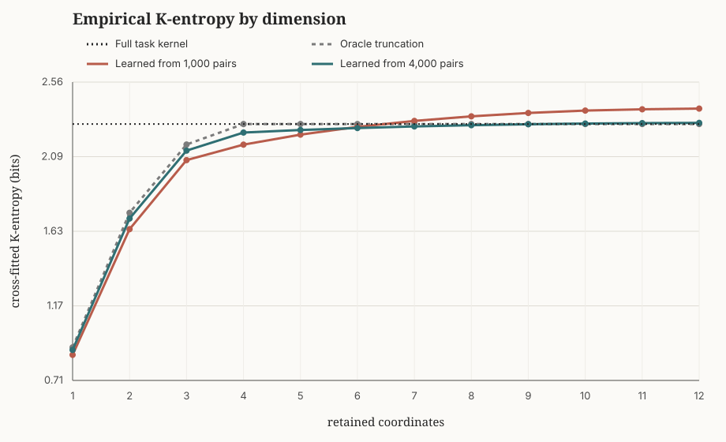
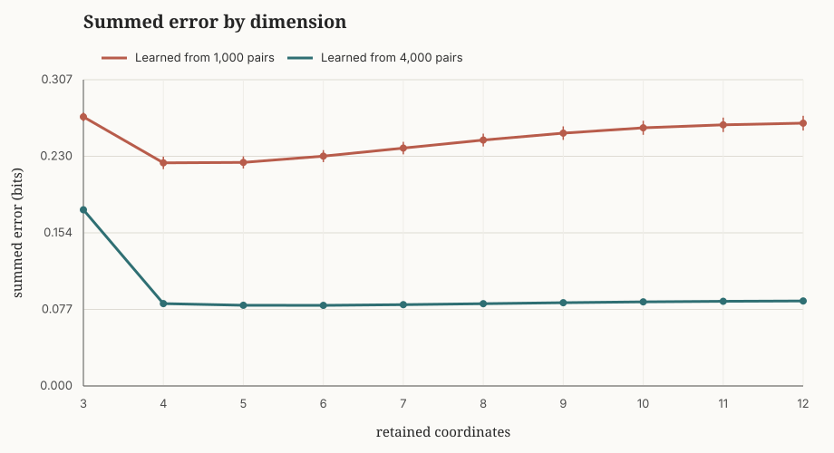

Scaling and PCA choose a geometry
First, an orientation from the perspective of SS-entropy. Take an ordinary data matrix with coordinates $x_1,\ldots,x_d$. If I scale coordinate $j$ by a positive number $s_j$, Euclidean distance in the transformed coordinates becomes
A change of one unit in a coordinate with small $s_j$ now counts more than the same change in a coordinate with large $s_j$, so the scaling influences closeness whenever the downstream model uses this Euclidean geometry. Standardization is the choice to treat a standard-deviation change in each measured coordinate as comparable. If we imagine the SS-entropy with an isotropic radial similarity kernel, its pullback to the raw coordinates has this diagonal geometry.
Because full PCA is an orthogonal rotation it leaves Euclidean distances, and any kernel that depends only on those distances, unchanged. A non-orthogonal transformation is different: it preserves a specified kernel if we transport the kernel with it. Truncated PCA makes the lossy choice to remove directions with low variance, independent of what the kernel can detect. I would rather specify the relevant distinctions first, express them through $K$, and then ask whether a simpler representation preserves them.
A task-preserving representation
Let $K^\star(x,x')$ be the similarity kernel I want to preserve. I'll start with a feature map $T:\mathcal X\to\mathcal Z$ and an output kernel (which we desire to be "simple"). Together they induce the pullback kernel
The (strong, distribution-free) condition is
Note that this gives $H_{K^\star}(P_X)=H_{K_Z}(T_\#P_X)$ for every $P_X$.
ChatGPT suggests I call this "kernel sufficiency" so that's what I'll do for now. The map $T$ may be many-to-one: it is allowed to discard raw distinctions as long as they do not change the target similarity (no ambiguity in the pullback). For a law $Q$, write its typicality as
When $H_K$ is concave, the proper tangent loss derived in the scoring-rule essay is
I will use $K$-cross-entropy, or $K$-CE, for its expected risk:
I report numerical cross-entropies and entropies below in bits, dividing these natural-log quantities by $\ln 2$.
If $P_Z=T_\#P_X$ and $Q_Z=T_\#Q_X$, kernel sufficiency gives
That is the $K$-cross-entropy invariance that I propose is valuable: $\mathcal C_K$ has the same value before and after an exact task-respecting transformation. Ordinary cross-entropy does not have this invariance in general; even for a bijection, it changes by the Jacobian determinant. I'll note that $\mathcal C_K$, being nonlocal, is more expensive to compute than CE. If we can push most of the complexity into the map $T$, fitting a model in $Z$ with CE and evaluating or fine tuning with $\mathcal C_K$ at the end is reasonable. This would give us a common scale on which to compare representations, and a principled distribution-free goal for finding $T$. What follows are two examples, the first being the simplest.
But first, I want to separate the two cases specifically where the above general equality appears useful. If a task kernel is naturally specified on an outcome space $Y$ that we want to predict, we ought to straightforwardly model $Y$ (from observed $X$, if available) and fit with $K$-CE. If $K$-CE is too expensive, we may want to transform $Y$ so that the output kernel is more "diagonal" and plausibly better approximated with CE. I hope to develop this further in a later essay. The other interesting case is when we can attain a $K^\star$ on a future or downstream outcome while $X$ is available at deployment. Perhaps we can choose a kernel over a rich object—such as a paragraph or molecule—for which similarity is easy to specify, and we intend to model directly from its embedding $X$. Then the aim is to find the above $T(X)$ that retains the task-relevant distinctions in the kernel while ignoring nuisance variations in $X$. In these cases we expect an independently specified task signal and want to compress $X$ to retain it for later modeling.
Simple finite coarsening example
I'll demonstrate a transformation in the simplest setting. Starting with seven raw states
and a similarity kernel pulled back to this same space: the two $A$ states have identical similarity profiles, as do the two $B$ states. The task cannot distinguish the members of either pair. The three $C$ states remain distinguishable, although they're almost identical.
Raw states, $K_7$
7 raw labels
Task states, $K_5$
5 task classes
Simplified states, $K_3$
3 lossy states
The original seven-state kernel factors exactly through the five-state coarsening, so any score that depends on the states through this kernel is unchanged.
By approximating, we can choose the transformation that merges $C_1,C_2,C_3$ into one state $C$ and pick the identity kernel on $(A,B,C)$. The pullback of this approximation changes only the off-diagonal similarities within the $C$ block, from $0.95$ to $1$ losing a small amount of information once a distribution is assigned.
For example, under a uniform distribution on the seven raw states, the exact five-state pushforward has probabilities $(2,2,1,1,1)/7$ and
The approximate three-state pushforward has probabilities $(2,2,3)/7$, so with the identity kernel
In return for this loss, the output kernel is the identity, so the tangent loss reduces to categorical log loss and $K$-CE reduces to ordinary categorical cross-entropy. In the end, we've traded a little task resolution for a simpler representation and simpler scoring problem, with the change measured by entropy over the empirical distribution.
Learning Gaussian task coordinates
I now want a continuous example where we can reduce the dimensionality of the representation. We'll do this one by assuming we have a similarity oracle we can query and fit to learn the kernel over the raw space. Let $X\in\mathbb R^{50}$ contain four task-relevant coordinates $U$ and 46 high-variance nuisance coordinates, mixed by a random orthogonal rotation. There is an unknown matrix $B$ such that $U=BX$, and the task similarity is
We observe either 1,000 or 4,000 noisy similarity ratings and use 80% of the ratings to estimate a rank-twelve linear map while reserving 20%, drawn from different samples, to guard against overfitting. From this map we construct a nested family
Each $A_r$ is a rank-$r$ task-spectrum truncation of the estimated map, so $K_r$ keeps the first $r$ directions of the learned task geometry. I then evaluate the whole frontier on independent held-out samples:

The full task entropy is $2.296$ bits. At rank four, the representation learned from 1,000 ratings has held-out entropy $2.169$; with 4,000 ratings it reaches $2.244$. The key thing is that $X$ alone does not identify which directions are nuisance, but the pairwise queries do. PCA has no access to those ratings and the task coordinates will be overwhelmed by the 46 nuisance dimensions. Furthermore and most interestingly to me, this procedure respects the truth that the task has 2.296 bits of entropy and that our procedure can estimate that. But matching that entropy is not enough to show that the learned kernel has recovered the same distinctions, and shouldn't be used alone to reduce dimension snice we can't decide what rank model to use from only this plot.
Choosing a rank from the frontier
Entropy is a scalar, so an approximate kernel may separate some observations the task regarded as substitutes and merge others the task distinguished, with the two errors canceling. One way to check the curve is to define
(Analogously, we can use the max with the corresponding reversal.) This gives two nonnegative quantities:
Reduced similarity creates distinctions that didn't exist in $K^\star$ and adds entropy; increased similarity erases distinctions and removes entropy. Their difference is the signed change in entropy and these errors might cancel, while their sum gives a summed error:

This criterion allows us to see the true task dimension well. With 1,000 ratings, ranks four and five differ by only $0.0004$ bits. Higher rank models worsen things without enouh oracle data. With 4,000 ratings the plateau is clear and we see that 4 coordinates is ideal.
A proposed workflow
The workflow I would consider is to first define or elicit a target similarity $K^\star$. Then, fit a transformation and simple output kernel on one set of pairwise task signals, compare the retained task entropy across dimensions on held-out objects, choose a dimension via the summed added and removed entropy quantities, then fit a model to the resulting task coordinates. Evaluate models with $K$-CE if the kernel is known to lead to a concave entropy.
Dimension reduction is not the only possible benefit. Among representations with similar fidelity, we may prefer coordinates that are interpretable, statistically stable, easy to model, or cheap to score. But low task dimension is a useful place to begin and shows how a high-dimensional observation can contain a much smaller task without equating task information with raw-data variation.
There is a separate question once the task-visible state has been chosen: should one fit its complete density by ordinary cross-entropy, or is the finite resolution of the task important in changing the fit? I will discuss that in a later essay.